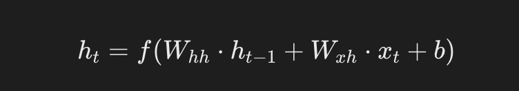
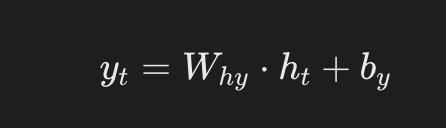
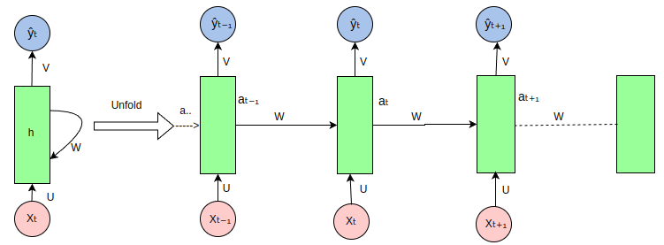
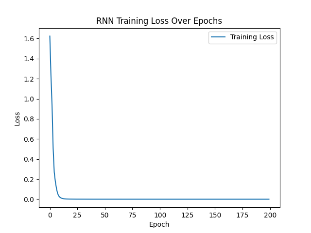

PyTorch リカレントニューラルネットワーク（RNN）
リカレントニューラルネットワーク（Recurrent Neural Networks, RNN）は、シーケンスデータの処理に特化したニューラルネットワークアーキテクチャの一種であり、時系列や順序データの動的情報を捉えることができ、テキスト、時系列、音声などのシーケンスデータを処理できます。
RNN は、自然言語処理（NLP）、音声認識、時系列予測などのタスクで幅広く応用されています。
RNN の重要な特性は、隠れ状態（hidden state）を保持できることです。これにより、ネットワークは以前のタイムステップの情報を記憶でき、シーケンスデータの処理にとって非常に重要です。
RNN の基本構造
従来のフィードフォワードニューラルネットワーク（Feedforward Neural Network）では、データは入力層から出力層へ流れますが、RNN では、データはネットワーク層に沿って流れるだけでなく、各タイムステップで現在の隠れ層状態にも伝播し、以前の情報を次のタイムステップへ渡します。
隠れ状態（Hidden State）：RNN は隠れ状態を通じてシーケンス内の情報を記憶します。
隠れ状態は、前のタイムステップの隠れ状態と現在の入力から共同で計算されます。
リカレントユニットの構造は次のとおりです：
- 入力（\(x_t\)）：タイムステップ \(t\) における入力ベクトル。
- 隠れ状態（\(h_t\)）：タイムステップ \(t\) における隠れ状態ベクトルで、以前のタイムステップの情報を格納するために使用されます。
- 出力（\(y_t\)）：タイムステップ \(t\) における出力ベクトル（オプション。タスクによって異なります）。
公式：

\[ h_t = f(W_{hh}h_{t-1} + W_{xh}x_t + b_h) \]
- ht：現在時刻の隠れ状態。
- ht-1：前の時刻の隠れ状態。
- Xt：現在時刻の入力。
- Whh、Wxh：重み行列。
- b：バイアス項。
- f：活性化関数（Tanh や ReLU など）。
出力（Output）：RNN の出力は、現在の入力だけでなく、隠れ状態の履歴情報にも依存します。
公式：

\[ y_t = W_{hy}h_t + b_y \]
- yt：タイムステップ t における出力ベクトル（オプション。タスクによって異なります）。
- Why：隠れ状態から出力への重み行列。
RNN がシーケンスデータをどのように処理するか
リカレントニューラルネットワーク（RNN）がシーケンスデータを処理する際の展開（unfold）ビューは次のとおりです：

RNN はシーケンスデータを処理するニューラルネットワークで、リカレント接続を通じてシーケンス内の各要素を処理し、各タイムステップで情報を伝達します。以下は図中の各部分の説明です：
-
入力シーケンス（Xt, Xt-1, Xt+1, ...）：図のピンク色の円は入力シーケンス内の各要素を表します。Xtは現在のタイムステップの入力、Xt-1は前のタイムステップの入力、というように続きます。
隠れ状態（ht, ht-1, ht+1, ...）：緑色の長方形は RNN の隠れ状態を表し、各タイムステップでシーケンスに関する情報を格納します。ht は現在のタイムステップの隠れ状態、ht-1 は前のタイムステップの隠れ状態です。
重み行列（U, W, V）：
U：入力から隠れ状態への重み行列。入力をXt隠れ状態の一部に変換します。W：隠れ状態から隠れ状態への重み行列。前のタイムステップの隠れ状態をht-1現在のタイムステップの隠れ状態の一部に変換します。V：隠れ状態から出力への重み行列。隠れ状態をht出力に変換します。Yt。
出力シーケンス（Yt, Yt-1, Yt+1, ...）：青い円は RNN の各タイムステップでの出力を表します。Yt は現在のタイムステップの出力です。
リカレント接続：RNN の特徴は隠れ状態のリカレント接続であり、ネットワークが現在のタイムステップの入力を処理する際に、以前のタイムステップの情報を考慮できるようにします。
-
展開（Unfold）：図は RNN のシーケンス上の展開プロセスを示しています。これは RNN が時間的にシーケンスデータを処理する方法を理解するのに役立ちます。実際の RNN 実装ではこれらのステップは並列処理されますが、概念的には展開して情報の流れを理解できます。
情報の流れ：情報は入力シーケンスから重み行列 U を通じて隠れ状態に伝達され、次に重み行列 W を通じてタイムステップ間で伝達され、最後に重み行列 V を通じて隠れ状態から出力シーケンスへ伝達されます。
PyTorch における RNN の基礎
PyTorch では、RNN を使って複雑なシーケンスモデルを構築できます。
PyTorch にはいくつかの RNN モジュールが用意されています：
torch.nn.RNN：基本的な RNN ユニット。torch.nn.LSTM：長短期記憶（LSTM）ユニット。長期的な依存関係を学習できます。torch.nn.GRU：ゲート付きリカレントユニット（GRU）。LSTM の簡略版ですが、通常はより訓練が容易です。
RNN クラスを使用する際は、入力の次元、隠れ層の次元、その他のハイパーパラメータを指定する必要があります。
PyTorch で簡単な RNN の例を実装する
以下は、RNN モデルを使用してシーケンスデータを処理し分類する、簡単な PyTorch 実装の例です。
1、必要なライブラリをインポート
例
import torch.nn as nn
import torch.optim as optim
from torch.utils.data import DataLoader, TensorDataset
import numpy as np
2、RNN モデルを定義
例
def __init__(self, input_size, hidden_size, output_size):
super(SimpleRNN, self).__init__()
# RNN 層を定義
self.rnn = nn.RNN(input_size, hidden_size, batch_first=True)
# 全結合層を定義
self.fc = nn.Linear(hidden_size, output_size)
def forward(self, x):
# x: (batch_size, seq_len, input_size)
out, _ = self.rnn(x) # out: (batch_size, seq_len, hidden_size)
# シーケンスの最後のタイムステップの出力をモデルの出力として使用
out = out[:, -1, :] # (batch_size, hidden_size)
out = self.fc(out) # 全結合層
return out
3、トレーニングデータを作成
RNN を訓練するために、ランダムなシーケンスデータを生成します。ここでの目標は、各シーケンスの最後の値を分類のターゲットとすることです。
例
num_samples = 1000
seq_len = 10
input_size = 5
output_size = 2 # 二値分類問題を仮定
# 入力データをランダムに生成 (batch_size, seq_len, input_size)
X = torch.randn(num_samples, seq_len, input_size)
# ターゲットラベルをランダムに生成 (batch_size, output_size)
Y = torch.randint(0, output_size, (num_samples,))
# データローダーを作成
dataset = TensorDataset(X, Y)
train_loader = DataLoader(dataset, batch_size=32, shuffle=True)
4、損失関数とオプティマイザを定義
例
model = SimpleRNN(input_size=input_size, hidden_size=64, output_size=output_size)
# 損失関数とオプティマイザを定義
criterion = nn.CrossEntropyLoss() # 多クラス交差エントロピー損失
optimizer = optim.Adam(model.parameters(), lr=0.001)
5、モデルを訓練
例
for epoch in range(num_epochs):
model.train() # モデルを訓練モードに設定
total_loss = 0
correct = 0
total = 0
for inputs, labels in train_loader:
# 順伝播
outputs = model(inputs)
loss = criterion(outputs, labels)
# 逆伝播と最適化
optimizer.zero_grad()
loss.backward()
optimizer.step()
total_loss += loss.item()
# 正解率を計算
_, predicted = torch.max(outputs, 1)
total += labels.size(0)
correct += (predicted == labels).sum().item()
accuracy = 100 * correct / total
print(f"Epoch [{epoch+1}/{num_epochs}], Loss: {total_loss / len(train_loader):.4f}, Accuracy: {accuracy:.2f}%")
6、モデルをテスト
トレーニング終了後、テストセットでモデルの性能を評価できます。
例
model.eval() # モデルを評価モードに設定
with torch.no_grad():
total = 0
correct = 0
for inputs, labels in train_loader:
outputs = model(inputs)
_, predicted = torch.max(outputs, 1)
total += labels.size(0)
correct += (predicted == labels).sum().item()
accuracy = 100 * correct / total
print(f"Test Accuracy: {accuracy:.2f}%")
7、完全なコードは以下のとおりです：
例
import torch.nn as nn
import torch.optim as optim
import matplotlib.pyplot as plt
import numpy as np
# データセット：文字シーケンス予測（Hello -> Elloh）
char_set = list("hello")
char_to_idx = {c: i for i, c in enumerate(char_set)}
idx_to_char = {i: c for i, c in enumerate(char_set)}
# データ準備
input_str = "hello"
target_str = "elloh"
input_data = [char_to_idx[c] for c in input_str]
target_data = [char_to_idx[c] for c in target_str]
# ワンホットエンコーディングに変換
input_one_hot = np.eye(len(char_set))[input_data]
# PyTorch テンソルに変換
inputs = torch.tensor(input_one_hot, dtype=torch.float32)
targets = torch.tensor(target_data, dtype=torch.long)
# モデルのハイパーパラメータ
input_size = len(char_set)
hidden_size = 8
output_size = len(char_set)
num_epochs = 200
learning_rate = 0.1
# RNN モデルを定義
class RNNModel(nn.Module):
def __init__(self, input_size, hidden_size, output_size):
super(RNNModel, self).__init__()
self.rnn = nn.RNN(input_size, hidden_size, batch_first=True)
self.fc = nn.Linear(hidden_size, output_size)
def forward(self, x, hidden):
out, hidden = self.rnn(x, hidden)
out = self.fc(out) # 全結合層を適用
return out, hidden
model = RNNModel(input_size, hidden_size, output_size)
# 損失関数とオプティマイザを定義
criterion = nn.CrossEntropyLoss()
optimizer = optim.Adam(model.parameters(), lr=learning_rate)
# RNN を訓練
losses = []
hidden = None # 初期隠れ状態は None
for epoch in range(num_epochs):
optimizer.zero_grad()
# 順伝播
outputs, hidden = model(inputs.unsqueeze(0), hidden)
hidden = hidden.detach() # 勾配爆発を防ぐ
# 損失を計算
loss = criterion(outputs.view(-1, output_size), targets)
loss.backward()
optimizer.step()
losses.append(loss.item())
if (epoch + 1) % 20 == 0:
print(f"Epoch [{epoch + 1}/{num_epochs}], Loss: {loss.item():.4f}")
# RNN をテスト
with torch.no_grad():
test_hidden = None
test_output, _ = model(inputs.unsqueeze(0), test_hidden)
predicted = torch.argmax(test_output, dim=2).squeeze().numpy()
print("Input sequence: ", ''.join([idx_to_char[i] for i in input_data]))
print("Predicted sequence: ", ''.join([idx_to_char[i] for i in predicted]))
コード解説：
データ準備：
- 文字シーケンスを使用し
hello、それをワンホットエンコーディングに変換します。 - ターゲットシーケンスは
elloh、つまり1文字右に回転させたものです。
- 文字シーケンスを使用し
モデル構築：
- 使用して
torch.nn.RNNリカレントニューラルネットワークを作成します。 - 全結合層を追加
torch.nn.Linear隠れ状態を出力にマッピングするために使用します。
- 使用して
トレーニング部分：
- 各エポックで損失を計算し、逆伝播します。
- 隠れ状態は
hidden.detach()勾配爆発を防ぎます。
テスト部分：
- モデルは文字の予測結果を出力します。
可視化：
- Matplotlib を使用してトレーニング損失の変化傾向をプロットします。
モデルがうまく訓練されたと仮定すると、出力は次のようになる可能性があります：
Epoch [20/200], Loss: 0.0013 Epoch [40/200], Loss: 0.0003 Epoch [60/200], Loss: 0.0002 Epoch [80/200], Loss: 0.0001 Epoch [100/200], Loss: 0.0001 Epoch [120/200], Loss: 0.0001 Epoch [140/200], Loss: 0.0001 Epoch [160/200], Loss: 0.0001 Epoch [180/200], Loss: 0.0001 Epoch [200/200], Loss: 0.0001 Input sequence: hello
結果から見ると、画像は損失が徐々に減少していることを示しており、モデルのトレーニングが有効であることを表しています。
8、可視化コード：例
import torch.nn as nn
import torch.optim as optim
import matplotlib.pyplot as plt
import numpy as np
# データセット：文字シーケンス予測（Hello -> Elloh）
char_set = list("hello")
char_to_idx = {c: i for i, c in enumerate(char_set)}
idx_to_char = {i: c for i, c in enumerate(char_set)}
# データ準備
input_str = "hello"
target_str = "elloh"
input_data = [char_to_idx[c] for c in input_str]
target_data = [char_to_idx[c] for c in target_str]
# ワンホットエンコーディングに変換
input_one_hot = np.eye(len(char_set))[input_data]
# PyTorch Tensor に変換
inputs = torch.tensor(input_one_hot, dtype=torch.float32)
targets = torch.tensor(target_data, dtype=torch.long)
# モデルのハイパーパラメータ
input_size = len(char_set)
hidden_size = 8
output_size = len(char_set)
num_epochs = 200
learning_rate = 0.1
# RNN モデルを定義
class RNNModel(nn.Module):
def __init__(self, input_size, hidden_size, output_size):
super(RNNModel, self).__init__()
self.rnn = nn.RNN(input_size, hidden_size, batch_first=True)
self.fc = nn.Linear(hidden_size, output_size)
def forward(self, x, hidden):
out, hidden = self.rnn(x, hidden)
out = self.fc(out) # 全結合層を適用
return out, hidden
model = RNNModel(input_size, hidden_size, output_size)
# 損失関数とオプティマイザを定義
criterion = nn.CrossEntropyLoss()
optimizer = optim.Adam(model.parameters(), lr=learning_rate)
# RNN をトレーニング
losses = []
hidden = None # 初期の隠れ状態は None
for epoch in range(num_epochs):
optimizer.zero_grad()
# 順伝播
outputs, hidden = model(inputs.unsqueeze(0), hidden)
hidden = hidden.detach() # 勾配爆発を防ぐ
# 損失を計算
loss = criterion(outputs.view(-1, output_size), targets)
loss.backward()
optimizer.step()
losses.append(loss.item())
if (epoch + 1) % 20 == 0:
print(f"Epoch [{epoch + 1}/{num_epochs}], Loss: {loss.item():.4f}")
# RNN をテスト
with torch.no_grad():
test_hidden = None
test_output, _ = model(inputs.unsqueeze(0), test_hidden)
predicted = torch.argmax(test_output, dim=2).squeeze().numpy()
print("Input sequence: ", ''.join([idx_to_char[i] for i in input_data]))
print("Predicted sequence: ", ''.join([idx_to_char[i] for i in predicted]))
# 損失を可視化
plt.plot(losses, label="Training Loss")
plt.xlabel("Epoch")
plt.ylabel("Loss")
plt.title("RNN Training Loss Over Epochs")
plt.legend()
plt.show()
実行後、以下のような画像が表示されます：

その他の拡張
クリックしてノートを共有
<p style="font-size:14px;">ノートはこの記事の内容を拡張したものである必要があります！</p><br> <p style="font-size:12px;"><a href="../tougao.html" target="_blank">記事投稿は、こちらをクリックしてください</a></p> <p style="font-size:14px;"><a href="../w3cnote/runoob-user-test-intro.html" target="_blank">登録招待コードの取得方法</a></p> <h3 class="text-muted"><i class="fa fa-info-circle" aria-hidden="true"></i> ノートを共有する前に<a href=";.html" class="runoob-pop">ログイン</a>が必要です！</h3> <p><a href="../w3cnote/runoob-user-test-intro.html" target="_blank">登録招待コードの取得方法</a></p>